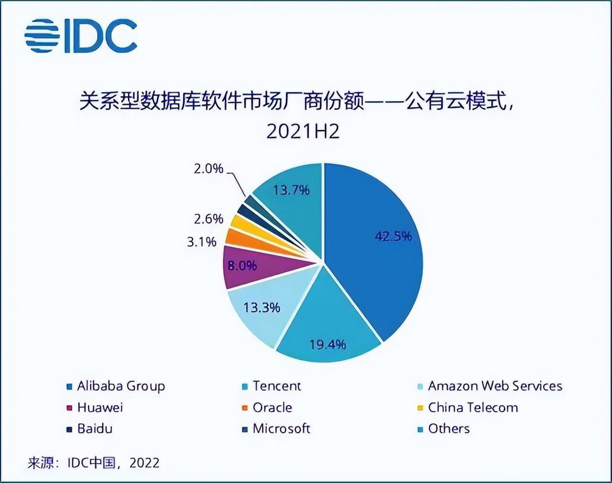
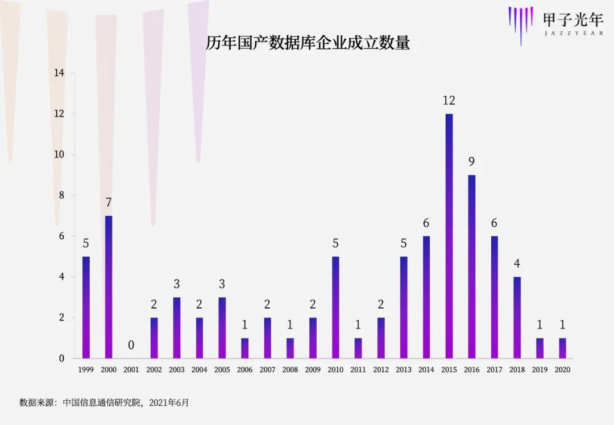
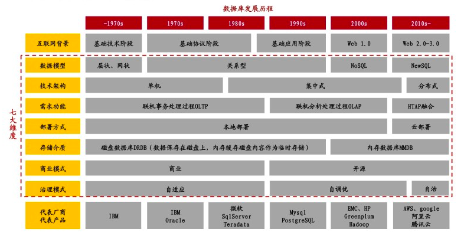
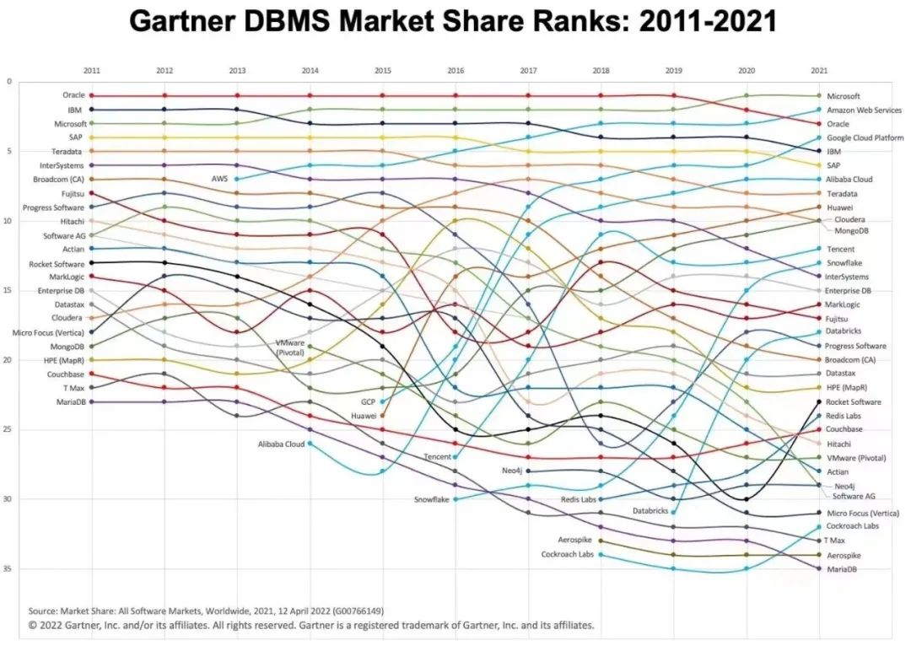

国产数据库出海，技术大航海时代的冒险与底气
一提到国产数据库，我们通常会联想到自主研发、国产升级。
的确，数据库曾是35项“卡脖子”清单的项目之一。直到2016年，在第七届中国数据库技术大会上，甲骨文副总裁吴承杨演讲时提到一组数据，Oracle、IBM、微软三家合计占据中国80%的市场份额，并强调“去IOE”对甲骨文并无影响，但教会了甲骨文如何贴近用户。
但今天要讲的不是国产升级的故事。实际上，今天的国产数据库已经在国内市场占有一席之地。IDC发布的《2021年下半年中国关系型数据库软件市场跟踪报告》显示，前八强中除了亚马逊、甲骨文和微软外，其余5家都是中国厂商，合计占据超过74%的市场份额。

如果我们回看最近几年的国产数据库，会发现一个新的增量逻辑——出海。
毫无疑问这是一个不确定性更大、难度更高的冒险，但故事的主角们正在跃跃欲试：
● 很多数据库创业公司，成立之初就定位国际化，
● 互联网公司的自研数据库，把产品卖向了东南亚
中国企业出海并非新鲜事，无论是游戏、互联网、跨境电商，都可以找到非常优秀的国产品牌。但这些企业基本都是业务应用出海，而数据库却是一个技术壁垒非常高的基础软件。
从国产升级到出海，数据库能否开启一个属于中国基础软件的大航海时代？
1.数据库的新增量——出海
近日，全球权威IT咨询机构 Forrester 发布了2022年度Translytical方向的数据平台厂商选型报告。该报告针对数据库技术给业务和客户所带来的影响提供务实和具有前瞻性的建议，是业界公认的极具价值的权威报告。
这是一个国产数据库从长期以来的追赶者角色，在国际市场舞台崭露头角的信号。
最近两年，在市场资本的追捧下，数据库成为基础软件领域的“风口”，仅2021年新成立的数据库公司就有30多家。

此外，国内的大型互联网公司出于成本的考虑，也开始自研数据库。
以四朵金花为代表的国产数据库，过去通常聚焦于军工、政务等封闭领域，整体市场份额较小，但如今电信、金融等重要行业数据库改造变更需求不断，存量市场前景诱人。根据中国信通院预测，到2025年，中国数据库市场总规模将达到688亿元，市场年复合增长率（CAGR）为23.4%。
虽然增速很快，但放眼全球，国产数据库整体的市场规模占比却很小。
根据中国信通院最新数据，2021年全球数据库厂商有363家，其中中国有116家，占比32%；而在全球700亿美元的市场规模中，中国市场只有47亿美元，仅占5.2%。
用5.2%的市场养活32%的数据库企业，着实是一片红海。
数据库是一个典型的投入高、周期长、难度大的基础软件。中国的数据库产品多数基于MySQL、PostgreSQL等开源数据库二次开发而来，如果从零开始自研一款数据库产品，在成立的前几年可能都是零收入的状态。
数据库天然带有全球化基因，其底层语言都是一行一行代码，而全世界的数据库程序员都能看得懂SQL语句。一款伟大的数据库产品，也必然是一款全球化产品。
全球化是一个广阔的蓝海市场。但出海首当其冲需要在技术与产品力上“修炼内功”。过去十年，对于国产数据库而言，这一内功就是“分布式”。
2.分布式架构：一次换道超车的机会
数据库的发展有很多趋势，招商证券曾梳理过七大维度——
技术架构：单机，集中式；分布式；
数据模型：层状、网状，关系型，NoSQL，NewSQL；
部署方式：本地部署，云部署；
需求功能：联机事务处理OLTP，联机分析处理OLAP，一体化混合负载HTAP；
存储介质：磁盘数据库DRDB，内存数据库MMDB；
商业模式：商业，开源；
治理模式：自适应，自调优，自治。

图片来源于招商证券
其中，从“集中式架构”到“分布式架构”的演进，对于国产数据库追赶世界级数据库，等同于一次“换道超车”的机会。
什么是分布式技术？
把数据库看做一架飞机，数据就是乘客。当乘客越来越多，传统单机、集中式数据库，只能靠增加飞机来解决，
谷歌在2003至2004年公布了三篇技术论文——分布式文件系统GFS，分布式KV存储数据库“Big Table”，处理和生成超大数据集的算法模型“MapReduce”，被称为分布式系统的“三驾马车”，这些论文的思想诞生了Hadoop生态，也为分布式数据库做好了基垫。2012年Google又发表了2篇论文——spanner和F1，此后业内产生了大量的分布式数据库。
早期的分布式数据库多为“分库分表中间件”，是一种分布式的过渡形态，以社交、电商等互联网公司自研为主。分库分表可以解决扩展性的需求，但对复杂查询业务的支持性较差，而且随着业务增长对于数据库运维人员的依赖越来越高。
原生分布式数据库可以解决两大问题，首先是高可靠性。
政府、银行、保险、证券等企业客户对于数据库的核心诉求在于，在不改代码的前提下，将过去在Oracle或IBM数据库上的“古董”级别的应用平滑迁移到国产数据库上。
原生分布式解决的第二个问题是补齐“分析能力”。
简单来说，以交易场景为例，数据库只做两件事，一是记账、转账，这被称为“事务处理”——OLTP；第二是算账，这被称为“事务分析”——OLAP。数据库诞生起主要以事务处理为主，对于分析的需求很少，后来随着数据规模的增大，分析型需求涌现。
传统的事务处理型数据库，需要构建独立的分析系统，从而产生两套数据库系统。这不但提高了成本，而且数据传输存在延时，不能满足有强时效性分析的业务场景。
而分布式架构可以用一套数据库同时实现OLTP+OLAP的业务，即当下大火的“HTAP”能力。
3.云+开源，出海的两记助攻
如果说，过去十年是国产数据库公司基于分布式架构修炼内功，那么最近两年一些“云+开源”的成熟，则是给国产数据库出海送出了两记助攻。
云数据库，就是数据库厂商将其服务托管在云平台上，天然拥有云计算的弹性能力，兼具数据库的易用、开放特点，以及传统数据库的管理和处理性能等，是新业务上云的最佳选择。
云厂商都在自研数据库。2014年，亚马逊发布业内首个云数据库Aurora，阿里云2017年启动自研云数据库PolarDB，微软2019年宣布将在其Azure云平台上托管新SQL数据服务，谷歌今年5月发布兼容PostgreSQL的AlloyDB。
独立的数据库厂商在也证明云数据库的威力。2020年上市的Snowflake，是当年美股最大IPO，市值一度超过300亿美元，其核心商业模式就是把数据仓库（OLAP的数据库）搬到了云上。
据Gartner预测，到2022年，云数据库的收入将占数据库市场总收入的50%，比2020年预测的提前了一年。
云数据库掀起了数据库行业的一场革命。在DB-Engines最新的数据库市场排名中，曾经雄霸榜首近十年的Oracle，先后被微软与亚马逊反超，已经跌落到第三名。

对于国产数据库而言，上云所带来的新的商业模式，也大大降低了出海的门槛。
在云数据库的模式下，数据库厂商可以把云厂商变为自己的渠道商，企业付费给IaaS厂商，IaaS厂商再分一部分给数据库厂商。
目前，国产数据库公司已经开始与云厂商积极展开合作。
云数据库之外，推动国产数据库出海的第二记助攻，在于“开源”。
与开源数据库相对应的是商业数据库。商业数据库由厂商提供完善的部署、运维解决方案，通常不开放源代码，成本也更高，比如Oracle、IBM等；而开源数据库则是将源代码开放，用户可以在源代码的基础上进行功能的自定义扩展。
2021年1月，根据DB-Engines数据，全球数据库开源许可证流行度首次超过商业许可证，开源数据库成为行业主流。
软件产品研发“唯快不破”，开源有助于强化数据库生态建设，通过运营开源社区快速获得反馈，并加快产品研发、提升产品质量，同时反哺社区开发者与ISV生态伙伴。
同时，开源意味着开放，有利于海外市场的拓客。
将开源与云相结合，让当下的国产数据库出海，比以往任何一个时代都有更多的机会。
但在具体的出海路径上，也出现了不同的选择。
4.进击东南亚！
国产数据库出海通常会有两个市场选择，一是更加成熟的欧美市场，二是离我们更近的东南亚市场。
欧美市场是数据库行业的制高点，这里是Oracle、IBM、微软、谷歌、AWS等国际数据库巨头的大本营，也是商业化难度最大、最有挑战性的市场。
但最有挑战性的市场也往往是最有说服力的市场。因此，国产数据库公司都在积极地通过开源社区做布道，做一些标杆客户。
欧美市场往往也是数据库技术趋势最为领先的市场，一个最直观的感受是，当国内机构更多关注OLTP、OLAP等传统领域的评估之时，海外关注更多的则是云数据库、开源、数仓、AI与自动化等趋势。
向世界级的技术趋势看齐，是国产数据库出海的重要意义。
在国内打磨产品，去欧美拿下标杆客户，再去日韩做变现，是很多数据库创业公司的市场化路径。
另外一个商业化路径更快、需求也更急迫的市场，是东南亚。
虽然市场空间的绝对值不如欧美，但东南亚市场是一个潜力巨大的蓝海市场，在东盟十国里，印尼、越南和菲律宾都是人口过亿的国家。
东南亚市场企业遇到的挑战，国产数据库已经在国内完整地经历过不止一遍。国产数据库通过稳定可靠、HTAP、高性价比的中国技术，来帮助东南亚企业核心系统升级，是一场正在发生的故事。
国产数据库，正在一步一步点亮出海的技能树。
不可否认的是，数据库出海仍然是一个难度极高的故事，文化差异、安全合规、地缘政治都是其中的不确定因素。
但从无到有、从小到大，中国技术出海本来就是一个漫长的征程。
在社交、跨境电商等出海领域，中国已经走出了抖音、SHEIN等优秀的企业。这一次，国产数据库出海，能否在难度更高的基础软件乃至更广泛的应用软件领域，书写一个新的中国故事？